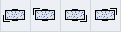
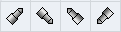
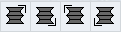
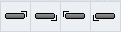
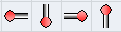
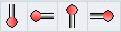
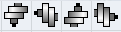
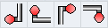
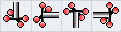
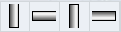

A number of tool types are available when you create a new tool. The tool type determines which geometry data is required and how it will be computed.
In the vertical softkey bar you switch between the following tool groups:
-
Favorites
-
Grinding tools
-
Special tools
Tool types
The following tools are listed in the "New Tool - Favorites" window for cylindrical grinding:
Type | Identifier | Tool position |
|---|---|---|
400 | Grinding wheel |  |
490 | Dresser |  |
494 | Dressing roll |  |
496 | Dressing wheel |  |
710 | 3D probe |  |
The following tools are listed in the "New Tool - Favorites" window for surface grinding:
Type | Identifier | Tool position |
|---|---|---|
410 | Grinding wheel | |
490 | Dresser | |
495 | Dressing roll | |
497 | Dressing wheel | |
710 | 3D probe |  |
The following tools are listed in window "New Tool - Grinding Tools" for cylindrical grinding:
Type | Identifier | Tool position |
|---|---|---|
400 | Grinding wheel | |
490 | Dresser | |
494 | Dressing roll | |
496 | Dressing wheel |
The following tools are listed in window "New Tool - Grinding Tools" for surface grinding:
Type | Identifier | Tool position |
|---|---|---|
410 | Grinding wheel | |
490 | Dresser | |
495 | Dressing roll | |
497 | Dressing wheel |
The following tools are listed in window "New Tool - Special Tools" for surface grinding:
Type | Identifier | Tool position |
|---|---|---|
710 | 3D probe | |
711 | Edge probe |  |
712 | Mono probe | |
713 | L probe |  |
714 | Star probe |  |
725 | Calibrating tool |  |